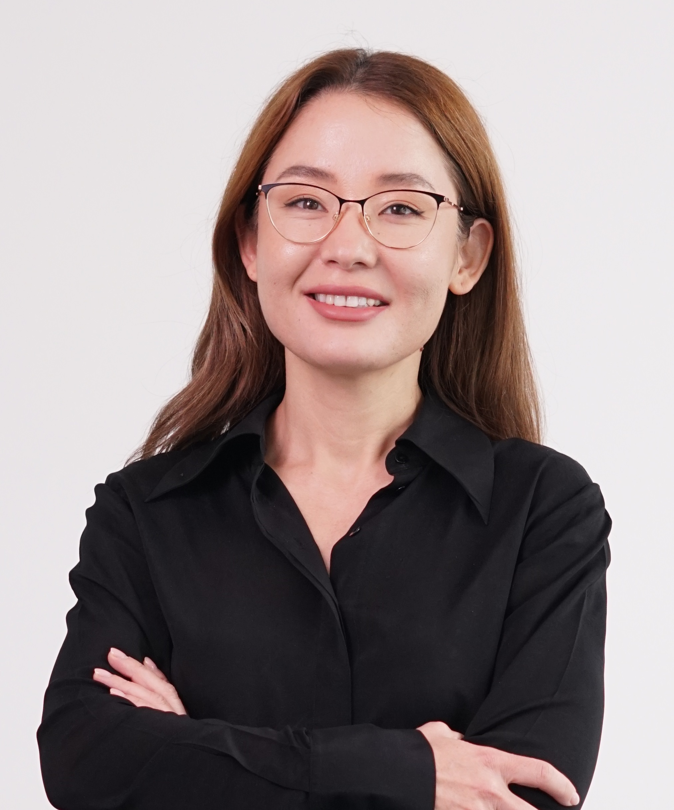
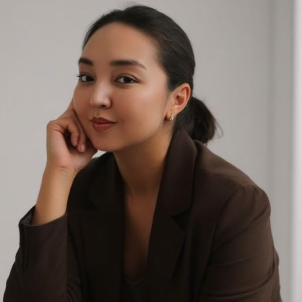
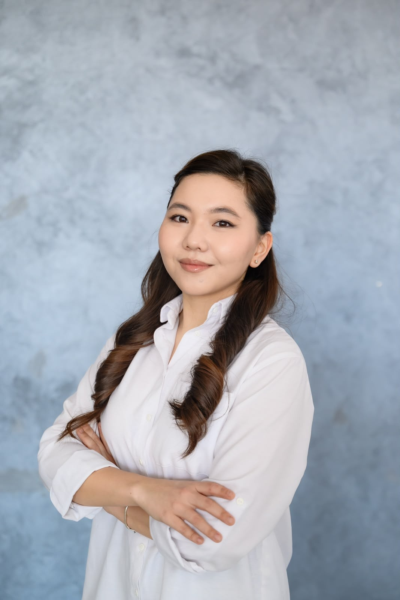

Group Members
A small, close-knit group spanning undergraduate researchers to postdocs — with a long track record of training women in electrochemical biosensing.
Principal Investigator

Dr. Damira Kanayeva
Associate Professor · Department of Biology, Nazarbayev UniversityPh.D. in Cell and Molecular Biology, University of Arkansas. Research focuses on EIS aptasensors for cancer and infectious disease diagnostics. Approximately USD 1.6M in competitive funding as PI/Co-PI; four PhD graduates supervised to date, with three ongoing.
PhD Students (ongoing)

Kamila Sagdat
PhD Candidate · Fall 2024 – presentEIS-based detection of monkeypox virus proteins.

Meruyet Issimova
PhD Candidate · Fall 2024 – present (currently on academic leave)
Zhazira Zhumabekova
PhD Candidate · Fall 2025 – presentMulti-target analyte detection and multiplexed aptasensor platforms.
MSc & Undergraduate Researchers (current)

Kamshat Kozybayeva
MSc in Life Sciences · Fall 2025 – presentThe lab has supervised 20+ undergraduate researchers on honors theses and capstone projects, including Aidana Askar (Honors Thesis, 2024–2025, simultaneous detection of two antigens by EIS aptasensor).
Z. Boshanova, E. Dedeiko, Z. Aitzhanova, M. Abdilmanova
BSc graduation project (Fall 2025 – present): exploring EIS for detecting inactivated TB and SARS-CoV-2.
A. Sagymbayeva, S. Simbinova, A. Temiresh, P. Rakhalskaya
BSc graduation project (2024–2025, completed): impedimetric biosensor for monkeypox virus A29 protein detection.
Alumni
Proud of everyone who has come through the lab and gone on to earn their degree — most recently Dr. Nigara Yunussova (2025). Their work is woven into our publication record and into every project the lab runs today.
PhD graduates (lead supervisor): Nigara Yunussova (2020–2025, now Senior Lecturer, South Kazakhstan Medical Academy), Yeldar Baiken (2018–2024, now Senior Researcher, National Laboratory Astana, NU), Aliya Bekmurzayeva (2014–2020, now Senior Researcher, National Laboratory Astana, NU), Marzhan Sypabekova (2015–2019, now Assistant Professor of Bioengineering at Florida Gulf Coast University).
MSc graduates (lead supervisor): Michael Shola David (2021–2023, now a PhD student at Monash University, Australia), Zhazira Zhumabekova (2021–2022), Nigara Yunussova (2018–2020).
Postdoctoral fellows: Aigerim Soltabayeva (2018–2020, now Assistant Professor, Dept. of Biology, NU), Dana Akilbekova (2016, now Assistant Professor, School of Engineering and Digital Sciences, NU), Dmitriy Berillo (2015–2016, now Scientific Coordinator for Water Resources, Center of Agro Competence, Kozybayev University).
Collaborators
Our work is developed with an interdisciplinary network of collaborators across institutions.
Nazarbayev University · DNA repair & cancer biology, co-PI on collaborative research grants
Co-author, EIS aptasensor and CEA aptasensor studies
University of Arkansas · doctoral advisor and long-term biosensors collaborator
Nazarbayev University · optical fiber biosensors, former PhD student